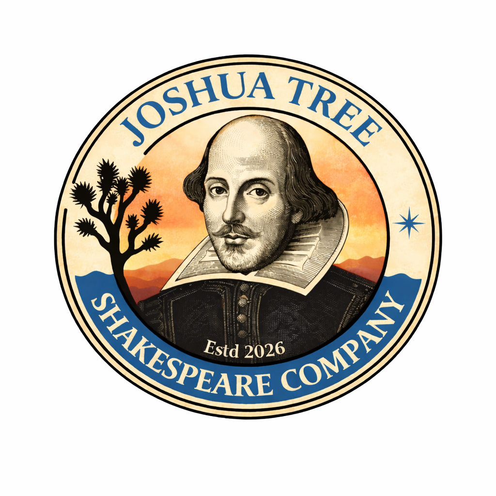

Welcome to Mojave
Step inside the world of Romeo & Juliet: A Mojave Reimagining.

A Note from the Director
Welcome, and thank you for joining us for Romeo & Juliet: A Mojave Reimagining.
Shakespeare’s story has traveled an extraordinary distance over the centuries, finding new life in different places, cultures, and generations. For our production, we have brought Verona to the Mojave Desert—a landscape of heat, beauty, isolation, history, and fiercely rooted communities.
While the world surrounding the play has changed, Shakespeare’s language has not. We have not rewritten Romeo & Juliet or modernized its text. Instead, we have reimagined the circumstances in which those words are spoken, allowing Shakespeare’s characters to inhabit a world that feels recognizably our own.
TownSquare is a vital part of that world.
Here you can meet the people of Mojave before you meet them onstage. Explore their friendships, families, businesses, photographs, conversations, rivalries, and the ordinary pieces of their lives that exist beyond the edges of Shakespeare’s scenes. Some things you discover here may simply make you smile. Others may look a little different after you have seen the play.
Thank you for your interest in our production and for taking the time to step inside its world. We hope you enjoy exploring Mojave—and we look forward to welcoming you to the theatre.
Liz Wessel
Director, Romeo & Juliet
Joshua Tree Shakespeare Company
Twentynine Palms, California
Ticket information soon to follow.
People of Mojave
Explore the profiles already appearing on TownSquare.